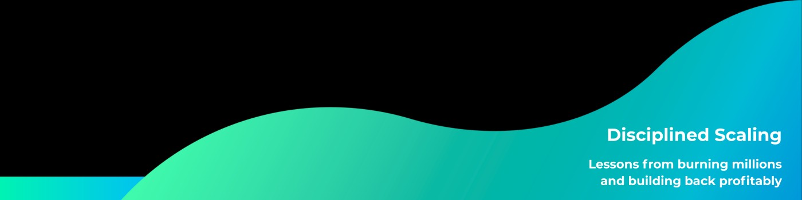
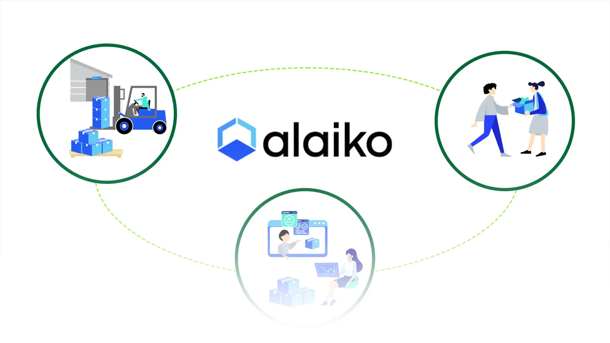
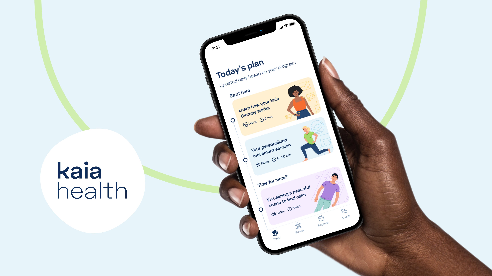

Disciplined Scaling — The 6-Step Playbook
A comprehensive framework for rebuilding profitability and growth discipline after rapid scaling. Learn how to diagnose root causes, align teams, and build sustainable growth systems.
Read Article →
Product Strategy • Operational Excellence • Organizational Design
Hi, I am Gabriel.
I built two startups. raised $150M+.
Scaled teams from 5 to 100+.
What nearly broke me?
Too many people, too fast.
No time to think. No systems. Just motion.
Leading ventures that transform industries
Co-Founder & Chief Product Officer (2019-2023)
Built Europe's leading Fulfillment-as-a-Service platform, enabling D2C brands to scale through intelligent automation and seamless integration. Led product strategy and development of Alaiko's core operating system.

Co-Founder (2016-2019)
Co-founded and scaled a digital therapeutics platform that revolutionized chronic pain and COPD treatment through AI-powered technology. Led early product development and go-to-market strategy.

Sharing frameworks and lessons from scaling companies
A comprehensive framework for rebuilding profitability and growth discipline after rapid scaling. Learn how to diagnose root causes, align teams, and build sustainable growth systems.
Read Article →the faster the money hits, the faster you can lose sight of what really matters.
Read Article →Getting venture money feels like winning. Actually spending it wisely is the real game.
Read Article →Sharing insights at industry-leading conferences
HealthTech Summit 2025
LogiMAT 2025
E-commerce Berlin 2025